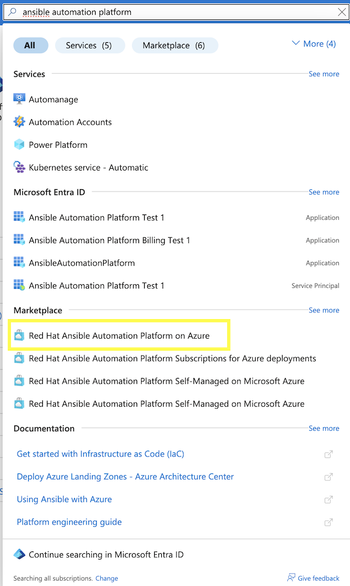
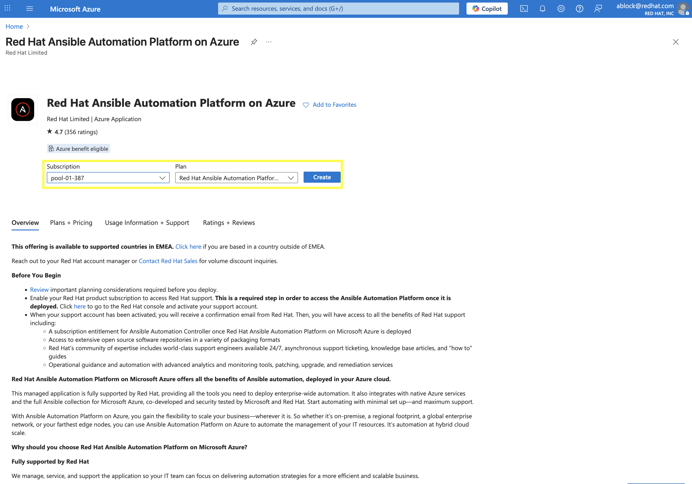
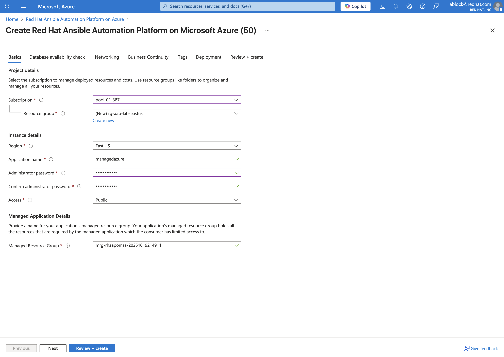
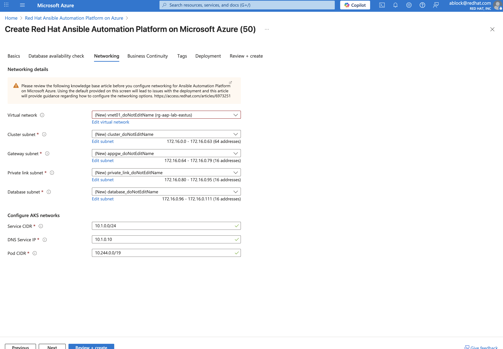
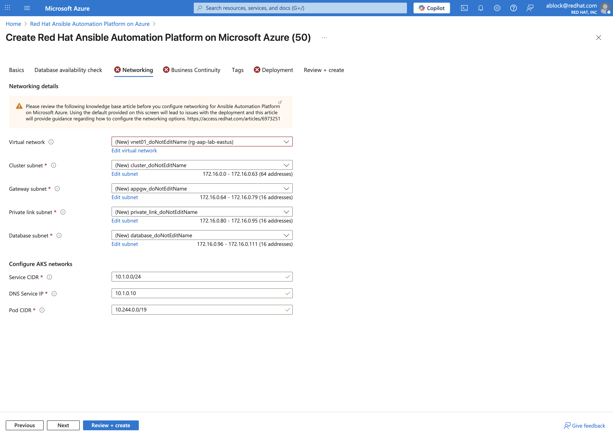

Introduction: Why AAP on Azure?
Red Hat Ansible® Automation Platform on Microsoft Azure offers all the benefits of Ansible automation, deployed in your Azure cloud and offered as a managed or self-managed application
1.1: Importance of AAP on Azure
-
Speed to Value: Deploy in minutes from the Azure Marketplace.
-
Fully Supported: Backed by Red Hat SREs for patching, upgrades, and reliability.
-
Hybrid Cloud Ready: Automate Azure, on-prem, and multi-cloud resources.
-
Unified Billing: Consumption billed directly through your Azure subscription.
-
Flexible Deployment: Three options to deploy AAP on Azure - Managed Application, Self-Managed, or on Azure Red Hat OpenShift.
1.2: Choosing Between Managed and Self-Managed
Based on Red Hat’s guidance, choosing to deploy Ansible Automation Platform (AAP) as a managed service in Azure offers significant advantages in convenience, support, and operational efficiency. It is an ideal choice for organizations that want to focus on automation rather than platform maintenance. In contrast, the self-managed option provides greater control and is suited for those with specific architectural or security policy needs.
1.2.1: Key Advantages of the Managed Application
-
Reduced Operational Burden: Red Hat’s Site Reliability Engineering (SRE) team handles upgrades, patches, and daily maintenance.
-
Automated Upgrades and Maintenance: You always stay current without doing upgrades yourself.
-
Infrastructure Management: Red Hat manages the AKS cluster, database, and scaling.
-
Monitoring and Support: Active monitoring with Red Hat as your single support contact.
-
Quick Time to Value: Deploy directly from the Azure Marketplace and start automating in minutes.
-
Simplified Billing: Unified billing through Azure and eligible for Microsoft Azure Consumption Commitment (MACC).
1.2.2: When to Consider Self-Managed
-
Full Control Over Architecture and Security: Necessary for strict compliance or specialized configurations.
-
Custom Scaling and Sizing: Allows manual control over VM sizes and architecture.
-
Complete Management Responsibility: Installation, upgrades, scaling, and backups are owned entirely by the customer.
In summary, choose the Managed Application if your priority is to accelerate automation and reduce operational overhead. Choose Self-Managed if your priority is full control and customization.
2. Lab Setup: Prerequisites
Before we begin deployment, ensure the following prerequisites are met:
-
Red Hat Account - Required to activate your AAP subscription entitlement after deployment.
-
Azure Subscription
-
Networking Plan - Prepare a dedicated VNET with a
/24range that does not overlap with existing CIDRs. -
Resource Quotas - Confirm at least 80 vCPUs available in the target Azure region for scaling.
3: Deploy AAP from Azure Marketplace
3.1: Launch the Marketplace Offer
-
Log in to Azure Portal.
-
In the Azure Portal, go to Marketplace and search for "Ansible Automation Platform". Select Red Hat Ansible Automation Platform on Azure.

-
Select your desired Subscription and Plan and then click Create.

3.2: Configure the Deployment
3.2.1: Basics / Database Availability Tab
Fill out the following fields on the Basics tab:
-
Subscription: Select your desired subscription.
-
Resource Group: Create a new one (e.g.,
rg-aap-lab-eastus) by clicking Create new and entering the name of your desired Resource Group. -
Region: Choose a region with available vCPU quota.
-
Administrator Password: Use the administrator password from your Azure account.
-
Access Mode: For lab purposes we’ll use Public access, but in production you should always plan for Private access with VNET peering.

-
Click Next
-
Confirm the Database Availability is validated and click Next again.
3.2.2: Networking Tab
The wizard automatically suggests values for each of the fields found within the Networking tab. Update the following fields as needed:
-
Virtual Network: Select an existing VNET that meets the prerequisites or create a new one.
-
Cluster Subnet: Choose a subnet within the selected VNET that has sufficient IP addresses available.
-
Gateway Subnet: Choose a subnet within the selected VNET for gateway traffic.
-
Private Link Subnet: Choose a subnet within the selected VNET for private link traffic.
-
Database Subnet: Choose a subnet within the selected VNET for database traffic.
-
Service CIDR: Enter a CIDR block that can be used for the cluster service.
-
DNS IP: IP Address assigned to the DNS service.
-
Pod CIDR: Enter a CIDR block that can be used for the cluster pods.

+ . Click Next.
3.2.3: Business Continuity Tab
-
Enable/Disable Disaster Recovery: For lab purposes, we will disable Disaster Recovery. In production, it is recommended to enable this feature.

-
Click Next.
3.2.5: Review + create Tab
Once all of the parameters have been added within the prior tabs, the proposed configurations are displayed for your review. They will be validated by Azure to ensure that all requirements have been met.
Once validation has completed successfully, click Create to begin the deployment.
4: Validate Deployment
Once the deployment has completed, review the resources that were provisioned.
4.1: Locate Resource Groups
After deployment, three (3) resource groups will be created:
-
Customer Resource Group (RG) - You own this.
-
Managed Resource Group (MRG) - Red Hat SRE-managed (read-only).
-
Node Pool Resource Group (NPRG) - Holds AKS resources. Do not modify without Red Hat guidance.
4.2: Access the AAP Console
-
In the Customer RG, locate the Managed Application resource.
-
Click Outputs and find the AAP Console URL.
-
Open the URL in your browser.
-
Log in with the admin credentials from your Azure account.
Once you have accessed the AAP console, you can perform any automation activities, much like you would with a self-managed installation.
5: Explore Networking (Optional Advanced Lab)
This section enables you to explore some of the networking options available when deploying AAP on Azure. For automation beyond localhost, configure Azure VNET peering:
-
Public Access: Already works for internet-facing automation.
-
Private Access: Requires VNET peering or VWAN configuration.
-
Automation Mesh: Deploy execution nodes closer to your workloads for hybrid or edge use cases. Assess the network conditions (latency, bandwidth) and security requirements for each location.
-
Decide on Node Roles:
-
Execution Nodes: Decide how many you need and where they’ll be deployed. Each will require a separate server or VM.
-
Ensure the VM’s Network Security Group (NSG) allows inbound traffic on port 27199 (the default receptor communication port) from your AAP controller.
-
If you’re using a private automation hub, also ensure the VM can reach it.
-
Integrate with controller: Execute the installer playbook on the Azure VM. This playbook installs the receptor service and configures a secure, encrypted connection back to your main AAP controller.
-
-
Hop Nodes: Consider using these if you need to traverse firewalls or complex networks, they don’t run jobs
-
Ensure the hop node can reach both the AAP controller and the execution nodes that will connect to it. Open port 27199 (the default receptor port) on the firewall to allow communication.
-
-